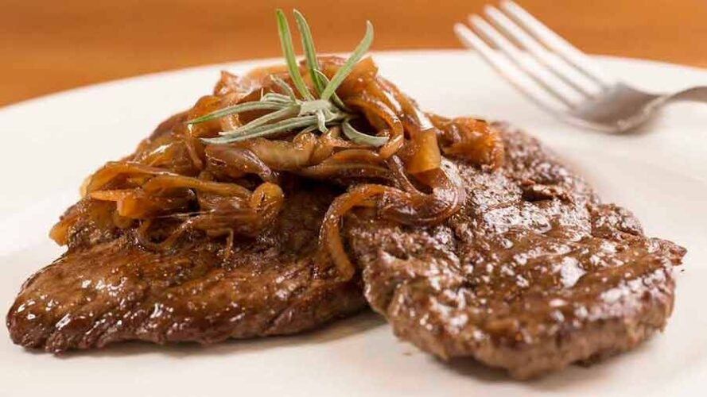

Bife Acebolado
- 
-
- 500 gramas de contrafilé em bifes
- 2 colheres de chá de Tempero Caseiro (receita tempero caseiro no site)
- 1 colher de sopa de óleo
- 1 cebola média cortada em fatias grossas
- 1/2 xícara de chá de água (100 ml)
- 1 colher de sopa de vinagre
INGREDIENTES
MODO DE PREPARO
Em uma tigela, coloque os bifes, acrescente o Tempero Caseiro e misture.
Em uma frigideira grande, coloque metade do óleo e aqueça em fogo alto.
Coloque metade dos bifes e frite-os, por 2 minutos cada lado, repondo o óleo quando necessário. Repita o processo com os bifes restantes. Reserve!
Na mesma frigideira, refogue a cebola. Adicione a água e o vinagre, e mexa, incorporando os resíduos do fundo da frigideira.
Volte os bifes à frigideira, aqueça bem e retire do fogo. Sirva em seguida.
Seu bife acebolado está pronto, bom apetite!
Bife Amilanesa
-
- 1 kg de bife (pode ser patinho, coxão mole, alcatra)
- 3 dentes de alho
- Sal a gosto
- Farinha de trigo
- Óleo para fritar
INGREDIENTES
MODO DE PREPARO
Tempere os bifes com o alho, sal e pimenta do reino a gosto.
Passe-os na farinha de trigo. Após passe-os no ovo batido com o leite.
Por último passe-os na farinha de rosca.
Frite em óleo quente.
Deixe escorrer em papel toalha. Sirva quente.
Prontinho! Dependendo do tamanho dos bifes, você pode cortar ao meio para ficar mais fácil de preparar e fritar.
Depois de preparar, você pode ainda guardar na geladeira em um pote fechado e consumir no jantar ou até mesmo no dia seguinte.
Para aquecer depois, você pode utilizar novamente o forno, ou ainda aproveitar a rapidez do micro-ondas ou até mesmo aquecer rapidamente os bifes na air fryer.
Como fazer bife à milanesa passo a passo Essa é uma ótima opção para quem quer comer bifes de um jeitinho diferente, seja no jantar ou no almoço.
Tá aí uma boa dica de mistura fácil de fazer para o dia a dia. Com um arroz branco e feijão, vai ficar tudo maravilhoso.
Espero que você tenha gostado da receita de bife à milanesa fácil de fazer, esse tão amado e delicioso bife empanado sequinho e crocante!
Bife de Panela
-

-
- 1kg de bife de alcatra
- 1/2 pimentão (da sua preferência, eu usei verde)
- 1 cebola
- 5 colheres de sopa de molho de tomate
- 1 tablete de caldo knorr de carne
- Óleo
- Coentro, sal e tempero seco a gosto
- 2 dentes de alho
- 1 xícara de água
INGREDIENTES
MODO DE PREPARO
Tempere a carne com o sal, alho triturado e o tempero seco. Deixe marinando e pegando o tempero por no mínimo 20 minutos.
Na panela de pressão, adicione o óleo e a cebola e refogue. Adicione o molho de tomate e os bifes. Refogue um pouco, e por fim adicione a água e o resto dos ingredientes.
Feche a panela, e deixe cozinhando por 20 minutos após pegar pressão.
Agora é só servir!
Essa receita fica gostosa porque pega bem o gosto dos temperos e a carne fica muito macia e saborosa. Eu acho prático principalmente quando tem muita gente para almoçar, pois consigo fazer tudo na mesma panela sem sujar o fogão com fritura.
Eu gosto de usar alcatra, mas também funciona com outras carnes como lagarto por exemplo. Só cuidado para acertar o tempo de cozimento para a carne não ficar dura.
Você gosta de fazer carne na panela de pressão? Conte aqui pra gente nos comentários. Compartilhe também suas receitas e dicas para o dia a dia!
Espero que tenha gostado da dica de hoje, e até a próxima!